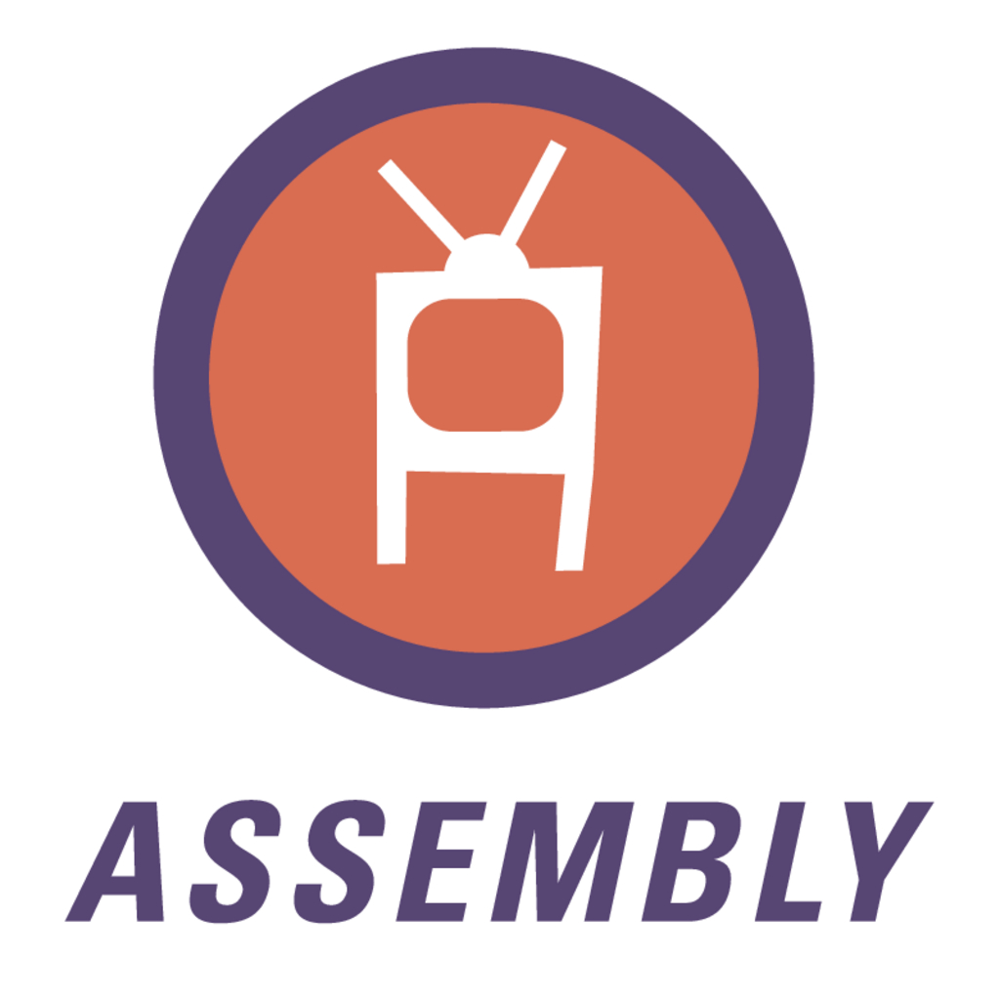

Assembly:

Linguagem de programação mais difícil do mundo, ela literamente é a linguagem de programação que se comunica com o hardware diretamente, então sim a maioria dos comandos do Assembly é simplesmente a linguagem da máquina o que fica bem difícil
de aprender e bem o Assembly serve para programas de alto desempenho, sistemas operacionais, firmware e sistemas emparcados, compilares e otimização e até ensino de arquitetura, ela normalmente é usada em sistemas operacionais e kernels, firmware e hardware embarcados, softwares que
exigem performance máxima, ensino de arquitetura de computadores e até criptografia e segurança.